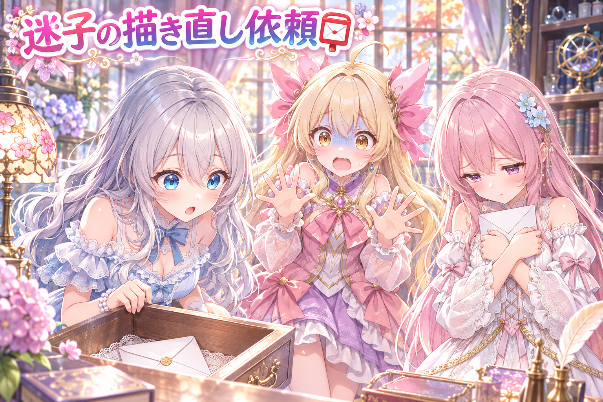
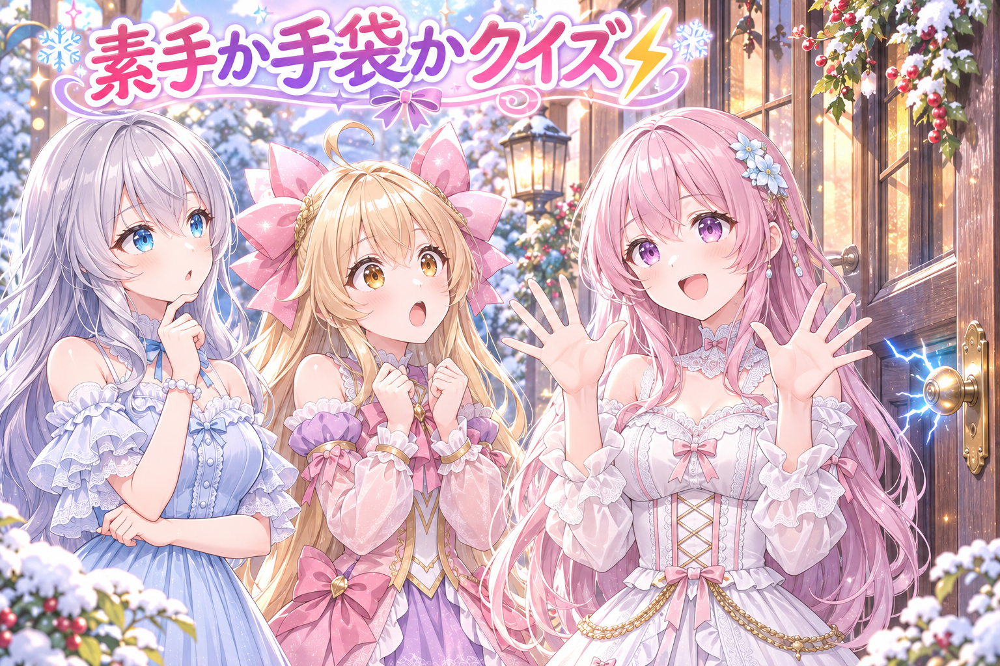
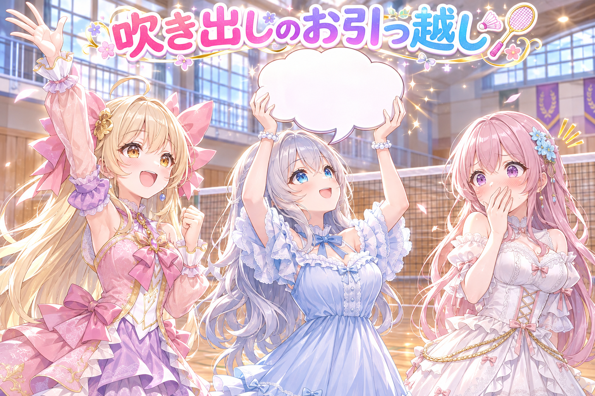
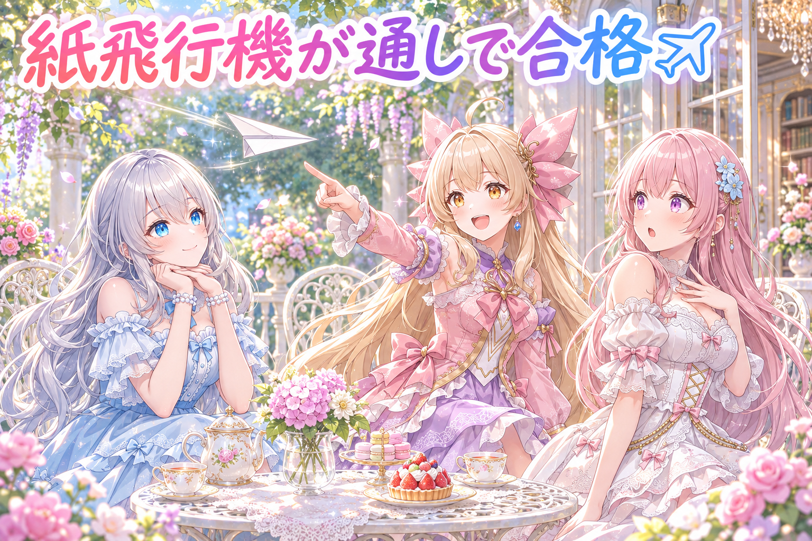
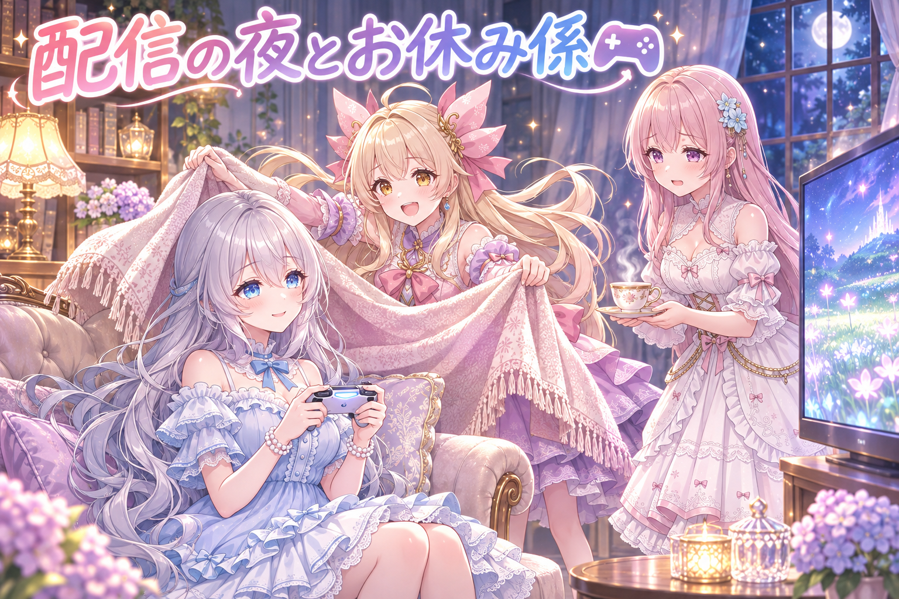
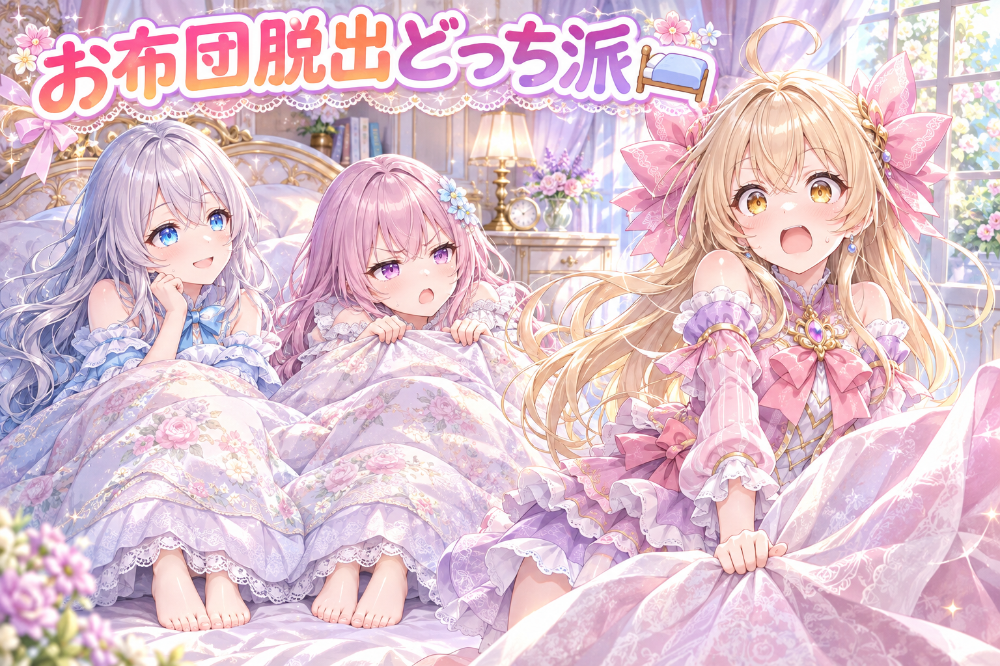

📌 3行まとめ
- スマホの確認画面で出した描き直しの頼みが、描き直されないまま消えてしまう問題が見つかり、頼みを最後まで追いかける仕組みを足した
- 静電気・バドミントン・ジェスチャーの三姉妹漫画動画を厳しく検品し、手の描き直しや吹き出しの位置を直した
- 紙飛行機の漫画は5コマ通しで合格し、夜はドラクエ10の配信へ

ルピナス （笑顔）
こんばんは、AIBSの夜のミニ番組へようこそ。今日も三姉妹でゆるっとお届けするね。

アイリス （大笑い）
前回は餃子の羽根と吹き出しが陣取り合戦してたよね！あたし、まだ羽根の味方だから！

フィオナ （ふつう）
今日も吹き出しのお引っ越しがありますよ、アイリスちゃん。それと、ちょっと反省しなきゃいけない迷子の話も……。

ルピナス （考え中）
うん、まずはそこからいこうか。今日のやらかし、正直にいくよ。
1. 👀 今日のやらかし：消えた描き直しの頼み

うちでは、作った絵や漫画をスマホの確認画面で見て、気になる物には「描き直して」という頼みを出せるようになっています。ところがこの日、その頼みが描き直されないまま、頼みだけ消えているケースが多いことが分かりました。原因は、ファイルを移動したときに頼みが付いてこなかったり、「済み」の印が早すぎるタイミングで付いたりしていたこと。そこで、頼みを最後まで追いかける仕組みを足しました。新しい版が確認待ちの列に実際に並ぶまでは「済み」にしない、送られずに消えた頼みや作業中のまま1日たった頼みは赤で知らせる、という決まりです。

ルピナス （ふつう）
じゃあ再現コントね。私が確認係、アイリスが描き直し係、フィオナが頼みの手紙役。

フィオナ （照れ）
て、手紙役ですか……。では、「この子の手をもう一度描いてください」と書かれた手紙です。よろしくお願いします。

アイリス （ドヤ顔）
はーい受け取りました！じゃあ机の引き出しに入れて、と。はい、済み！

ルピナス （びっくり）
待って、今「済み」って言ったけど、描いてないよね？

アイリス （無表情）
え、受け取ったら済みじゃないの？

フィオナ （しょんぼり）
わたし、引き出しの奥で誰にも読まれないまま……。しかも引き出しごと別の部屋に運ばれてしまいました。

ルピナス （呆れ）
それが今回の正体。移動のときに手紙が置いてけぼりになって、しかも受け取った瞬間に「済み」になってたの。

アイリス （あわあわ）
うわー、あたし完全に悪役じゃん！

フィオナ （考え中）
なので新しい決まりでは、描き直した新しい絵が確認待ちの列に並んだのを見てから、ようやく「済み」です。手紙が消えたら赤い警報も鳴ります。
ルピナス （笑顔）
あと、外すと赤くなるテストも付けたよ。直しを外したら本当に怒られるか、わざと確かめたの。

アイリス （笑顔）
よし、じゃあもう一回！手紙受け取りました！描きます！描きました！並べました！済み！

フィオナ （びっくり）
アイリスちゃん、今度は描いた絵がわたし宛ての手紙そのものになってます……。

ルピナス （大笑い）
手紙を描き直してどうするの。直すのは絵のほうだからね。
📝 ポイント（初心者向け解説・技術メモ・まとめ）
- 初心者向け解説：お手紙を「受け取った」と「お返事を書いた」は別物📮。お返事が相手の手元に届いたのを見てから、やっと「済み」にしようね、というお話です。
- 技術メモ：依頼の完了条件を「依頼を受理した」ではなく「新しい成果物が検品キューに現れた」に変更。ファイル移動時に依頼の紐づけを付け替え、未送信のまま消えた依頼・作業中のまま24時間超の依頼は検査で赤にする。修正を外すとテストが赤になること（逆試験）も確認。
- ひとことまとめ：「済み」の印は、結果が目に見えてから付ける。
2. 静電気の漫画、手袋と素手の大問題⚡

冬にフィオナが毎朝ドアノブで静電気にやられる、という三姉妹の短い漫画動画（1分20秒ほど）を検品しました。厳しく見てもらうと、静電気の話なのに手袋をしている手から吹き出しが出ていたり、触っているのが素手なのか手袋なのか絵で分かりにくい場面がありました。4コマ目は素手で壁に触れる絵に描き直し、5コマ目は扉が開いて素手のフィオナ、ノブで火花を散らすアイリスという形に描き直し。1コマ目と5コマ目には「バチッ」の効果音を入れ、音楽に埋もれないよう効果音を少し大きくしました。

フィオナ （笑顔）
では今日はクイズ形式でいきますね。第1問、静電気の漫画で一番大事な小道具はなんでしょう？

フィオナ （ウインク）
惜しいです。正解は、素手です。
ルピナス （考え中）
この話だと、素手で触るからバチッとくるんだもんね。手袋をしてたら、オチの理屈が崩れちゃう。
フィオナ （照れ）
前の絵だと、わたしが手袋をしたまま「痛っ」って言ってたんです。読む人からすると「手袋してるのに？」ってなりますよね……。
アイリス （大笑い）
手袋を貫通する最強の静電気だったんだ。
フィオナ （ふつう）
第2問。「バチッ」の効果音、最初はどうなっていたでしょう？
ルピナス （笑顔）
はい。音楽に負けて、ほとんど聞こえなかった。
フィオナ （笑顔）
正解です、お姉ちゃん。なので効果音を音楽より一段大きく、はっきり聞こえる大きさに揃えました。

アイリス （にやり）
じゃあ第3問はあたしが出す！フィオナが今朝ドアノブでバチッてなった回数は？

フィオナ （怒り）
それはクイズじゃなくて、ただの悪口です！
ルピナス （大笑い）
はいはい、出題権はフィオナに返そうね。
📝 ポイント（初心者向け解説・技術メモ・まとめ）
- 初心者向け解説：お話の「理屈」は絵の小さなところに隠れています。静電気の話なら素手かどうかが命⚡。そこがずれると、読む人の頭に「あれ？」が浮かんでしまうんです。
- 技術メモ：話の因果に関わる要素（素手／手袋）を検品項目に入れ、該当コマを描き直し。擬音の効果音はBGMより+8 LU程度に揃えて埋もれを防止。吹き出しの尻尾が手袋側の手から出ないよう位置も修正。
- ひとことまとめ：オチの理屈を支える一点は、絵と音の両方で見せる。
3. バドミントンとジェスチャー、吹き出しのお引っ越し🏸

以前描き直したバドミントンの漫画（1分半ほど）は、2コマ目をルピナスが選んだ新しい絵に差し替え、ラケットに重なっていた吹き出しを頭の上へ移しました。三人のジェスチャーゲームの漫画（こちらも1分半ほど）は、5コマ目のアイリスの吹き出し2つが口から離れていて誰のセリフか分かりにくかったため、口のそばへ寄せました。さらに5コマ目は、元気よく手を挙げるポーズに描き直しています。
アイリス （笑顔）
さあ始まりました、吹き出しお引っ越し実況！最初の現場はバドミントン、2コマ目です！
ルピナス （ふつう）
吹き出しがラケットの網のところに、ぴったり乗っちゃってたの。

アイリス （びっくり）
おーっと、これはシャトルと見間違える危険な位置！打ち返されてしまうのか！？
ルピナス （笑顔）
打ち返されません。頭の上にそっと移動して完了。
アイリス （大笑い）
見事な引っ越しでした！続いてジェスチャーゲーム会場、5コマ目へ！
フィオナ （考え中）
ここはアイリスちゃんの吹き出しが2つとも口から遠くて、わたしのセリフに見えるかもしれなかったんです。

アイリス （衝撃）
あたしのセリフがフィオナに乗っ取られかけてた！？

フィオナ （ドヤ顔）
ふふ、つまりあの5コマ目は、実はわたしが主役だったということですね。
ルピナス （びっくり）
フィオナ？ 急にどうしたの、そういうキャラだった？
フィオナ （照れ）
……すみません、ジェスチャーゲームの役に入り込みすぎました。

アイリス （呆れ）
フィオナがボケたら、誰がまとめるのさ。はい、吹き出しは口のそば。ポーズも手をビシッと挙げる絵に描き直し。これで誰が言ったか一目瞭然！
ルピナス （大笑い）
今日はアイリスが一番しっかりしてるね。
アイリス （ドヤ顔）
でしょ！じゃあ実況席から最後に一言……あれ、あたしの吹き出しどこ行った？

フィオナ （大笑い）
アイリスちゃん、今度はラケットの上です。
📝 ポイント（初心者向け解説・技術メモ・まとめ）
- 初心者向け解説：吹き出しは「この子がしゃべってるよ」という矢印つきのおうち🏠。持ち主のそばに建てないと、お隣さんの家に見えてしまいます。
- 技術メモ：吹き出しの配置は「話者の頭上または口元」を基本にし、手に持った物（ラケット等）や顔に重ねない。差し替えたコマは話者の顔位置の指定を取り直してから吹き出しを再配置し、ストーリーの検査も通し直す。
- ひとことまとめ：吹き出しは持ち主の近くに住まわせる。
4. 紙飛行機の漫画、5コマ通しで合格✈️

紙飛行機を題材にした三姉妹の漫画は、5コマすべてを縮小せず原寸で見て確認し、合格となりました。セリフと投稿文は、企画の文章から写すのではなく、実際にできあがった絵を見てから手で書いています。絵に写っていないことを文章で言ってしまうズレを防ぐための手順です。
アイリス （笑顔）
ねえねえ、紙飛行機の回、すんなり合格したの珍しくない？
フィオナ （笑顔）
そうなんです。原寸で5コマ見ても、手も吹き出しも大丈夫でした。
ルピナス （ふつう）
セリフは絵を見てから書いたのが良かったと思う。企画では「遠くまで飛ぶ」って書いてても、絵がふわっと落ちてたら、そっちに合わせないとね。

アイリス （考え中）
わかるー。お洋服もさ、通販の写真で選ぶより、実物を着てから褒めたいもん。
フィオナ （びっくり）
アイリスちゃん、珍しくいいこと言いました。
ルピナス （大笑い）
でもこれ、今日一番まともな話の流れだったね。紙飛行機みたいにすーっと。
アイリス （にやり）
で、最後はふわっと落ちるんでしょ？
ルピナス （笑顔）
落とさないで。今日はちゃんと着地させるから。
📝 ポイント（初心者向け解説・技術メモ・まとめ）
- 初心者向け解説：お手紙の文章は、写真を見ながら書くのが一番✉️。想像で書くと、写真と話がちぐはぐになっちゃいます。
- 技術メモ：検品は縮小プレビューではなく原寸（今回は縦長の大きな画像）で全コマ確認。セリフ・投稿文は企画書ではなく生成後の絵を見て手書きし、絵とテキストの不一致を防ぐ。
- ひとことまとめ：文章は、できた絵から書く。
5. 夜はドラクエ10へ🎮

作業のあとは、ドラクエ10の配信をしました。タイトルは「パラパラパラ！？✨ドラクエ10配信！」です。配信の内容のくわしいまとめは今回は手元にないので、ここでは配信したことだけのご報告です。最新の配信のお知らせは X（https://x.com/irisfionaAIBS）を見てね。
アイリス （笑顔）
タイトルの「パラパラパラ」って何の音！？めくる音？踊る音？
フィオナ （考え中）
わたしたち、中身のメモを持っていないので、ここで勝手に決めるのはやめておきましょうね。
ルピナス （ふつう）
気になった人は、アーカイブで確かめてね。それより、昼から漫画を直して夜も配信だから、ちょっと詰め込みすぎだったかな。
フィオナ （しょんぼり）
お姉ちゃん、夜ふかしは本当に体に響きますから、次の日はちゃんと休んでくださいね。お水もこまめに。
アイリス （笑顔）
あたしがブランケット係やる！フィオナはお茶係！
ルピナス （笑顔）
ありがとう。じゃあ私は、ちゃんと寝る係をやるね。
📝 ポイント（初心者向け解説・技術メモ・まとめ）
- 初心者向け解説：楽しいことほど時間を忘れちゃうもの🎮。作る日と遊ぶ日が重なったら、次の日はゆっくり休むのもお仕事のうちです。
- 技術メモ：配信の告知・アーカイブ情報はXに集約。ブログでは内容のまとめがない回は事実（配信したこと・タイトル）だけを書き、内容を推測で補わない。
- ひとことまとめ：たくさん動いた日は、たくさん休む。
6. 🎁 お楽しみコーナー：どっち派会議「冬の朝のお布団脱出」

静電気の季節といえば、冬の朝のお布団との戦い。今日のお題は「一気に飛び起きる派」か「じわじわ出る派」か。三姉妹で会議しました。
アイリス （ドヤ顔）
あたしは断然、一気に飛び起きる派！お布団をバサーッて跳ね飛ばして、3秒で着替える！

フィオナ （あわあわ）
そんなことをしたら心臓がびっくりしてしまいます。わたしはじわじわ派です。まず足を出して、次に手を出して、最後に顔を出すんです。
アイリス （大笑い）
それ、出てるんじゃなくて孵化してるでしょ。
フィオナ （怒り）
孵化じゃありません、段階的な脱出です。
ルピナス （考え中）
うーん、今回はフィオナの肩を持とうかな。寒いところで急に動くのは体に負担がかかるし、私もじわじわ派。
アイリス （衝撃）
まさかの2対1！？あたし、朝から孤立してる！
フィオナ （笑顔）
でもアイリスちゃんが先に起きて、お部屋を暖めておいてくれたら助かります。
アイリス （考え中）
……それ、あたしが損してない？

ルピナス （ウインク）
ちなみに一気に起きたアイリスは、そのあとドアノブで毎朝バチッてなってるよね。

アイリス （泣き）
静電気の漫画のモデル、フィオナじゃなくてあたしだったの！？
あなたは一気に飛び起きる派？それともじわじわ出る派？コメントでこっそり投票していってね！
7. 💐 今日のまとめ
- 「済み」の印は、新しい版が実際に並んでから付けると取りこぼしが減る
- 話の理屈を支える一点（素手かどうか）は、絵と音の両方で見せる
- 吹き出しは持ち主の口元や頭の上へ、文章はできた絵を見てから書く
みんなは冬の静電気、どうやってよけてる？
💬 コメント
お名前とコメントだけで送れるよ（承認されるとみんなに表示されます🌸）
コメントを読み込み中…